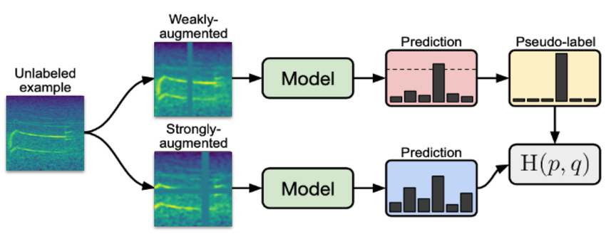
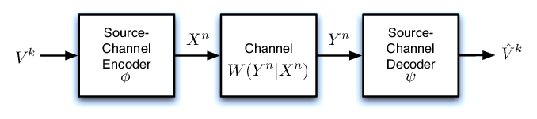

About Me
Current Project
Robustness in Semi-Supervised Learning

Semi-Supervised Learning is a useful approach when we have limited labeled data. There are other methods available as well, such as Active Learning, Pre-training + Dataset Auto-generation, and Fine-tuning, that can also be employed in this situation.The main idea behind SSL is to utilize a loss function that can be written as . Here, represents the loss for the labeled data, and represents the loss for the unlabeled data. An important aspect is the weighting term .
There are several well-known hypotheses in the field of SSL, including Smoothness Assumptions, Cluster Assumptions, Low-density Separation Assumptions, and Manifold Assumptions.
Pseudo Labeling is one approach that involves assigning fabricated labels to unlabeled samples. These fabricated labels are determined based on the maximum softmax probabilities predicted by the current model. Subsequently, the model is trained using a combination of labeled and unlabeled samples in a purely supervised manner.
The concept of Pseudo labeling is similar to that of Entropy Regularization. The goal of Entropy Regularization is to minimize the conditional entropy of class probabilities for unlabeled data, which helps reduce overlap between classes.
Robustness in Machine Learning refers to a model's ability to maintain its performance even in the presence of adversarial conditions or uncertainties, such as noisy data, parameter changes, and examples outside of the training dataset. Pseudo Labeling is one technique that can enhance model robustness, as it assigns fabricated labels to unlabeled samples based on the current model's predictions. This approach shares similarities with Entropy Regularization, which also aims to minimize the conditional entropy of class probabilities for unlabeled data to achieve low-density separation between classes.
In summary, my current focus is on designing and developing Robust SSL methods that can handle imbalanced datasets and noisy annotations and labels. The Result will be published soon.
Joint Source-Channel Coding

Modern communication is heavily influenced by Shannon Information Theory, which includes an important concept known as the separation theorem. According to Shannon, the classic approach of compressing the source data first and then compressing the bitstream for transmission over the channel is optimal, with no loss of optimality in scenarios of infinite block length and unbounded complexity.Separation-based designs have been successful in our current communication networks, which primarily focus on delivering content for human consumption. However, the emergence of 5G technology is bringing significant changes. It has become clear that meeting the desired performance requirements is not possible within the confines of the traditional separate network architecture. While 5G has introduced the concept of ultra reliable low latency communications (URLLC) to address latency concerns, it often overlooks the complexity of signal processing, such as compression, which can greatly contribute to the end-to-end latency.
This realization has led to the development of Joint Source-Channel Coding (JSCC). JSCC is an end-to-end approach that outperforms the classic method in practical scenarios where we have finite block length. Research has shown that deep neural networks can be highly effective in the realm of JSCC.
For my bachelor thesis, I am focusing on Deep JSCC in Multi-Input Multi-Output (MIMO) channels, specifically in the context of video and image transmission.
Internet of Things
The advent of the Internet of Things (IoT) has transformed how technology functions, focusing on the interconnectivity of everyday devices and objects with the internet. This paradigm shift offers improved efficiency, convenience, and data-driven decision-making across diverse industries, from smart cities and homes to healthcare and agriculture.
The profound impact of IoT adoption and success can largely be attributed to its intricate relationship with 5G technology. As the fifth generation of wireless communication, 5G delivers unmatched speed, low latency, and vast device connectivity, thereby offering the ideal infrastructure for IoT's growth. By leveraging 5G's capabilities, IoT devices can communicate instantly with each other and central servers, enabling seamless data exchange and powering applications, such as remote surgery and autonomous vehicles.
The synergy between IoT and 5G holds tremendous promise for revolutionizing how we live and work. This connection has the potential to create a more interconnected, responsive, and streamlined world.
Based on these, I found this field fascinating and did some research on this:
I was part of group for designing an innovative digital stethoscope that brings significant enhancements to clinical auscultation through high-quality sound capture and transmission. The device utilizes an embedded system in conjunction with an Internet of Things (IoT) platform, making it particularly suited for applications that require remote healthcare delivery, such as during pandemic situations. The Result will be published soon.
Selected Courses
Notable Courses with Project
Information Theory methods in Statistics and Learning
High Dimensional Probability
Deep Learning
Statistical Learning
Convex Optimization
Logical Circuits
Signal and Systems
Audited Courses
CS 182/282A : Deep Neural Networks | UCBerkeley
CS 189/289A: Introduction to Machine Learning | UCBerkeley
STAT 157 : Introduction to Deep Learning | UCBerkeley
CS 860 : Algorithms for Private Data Analysis | University of Waterloo
Math 18.06 : Linear Algebra | MIT
Teaching Assistant
Differential Privacy: Fall 2023
Electronics: Spring 2022
Communication Systems: Fall 2022
Basic of Programming: Fall 2022
Theory of Circuits: Fall 2021-22
Sensors and Measurement: Fall 2021-23
Preprint and Publications
Clinical IoT in Practice: A Novel Design and Implementation of a Multi-functional Digital Stethoscope for Remote Health Monitoring | Techrxiv | 2023
Semi-supervised Learning under Self-training via -Divergence | OpenReview | 2023
There are some drafts under review. Contact with me to have access to them.